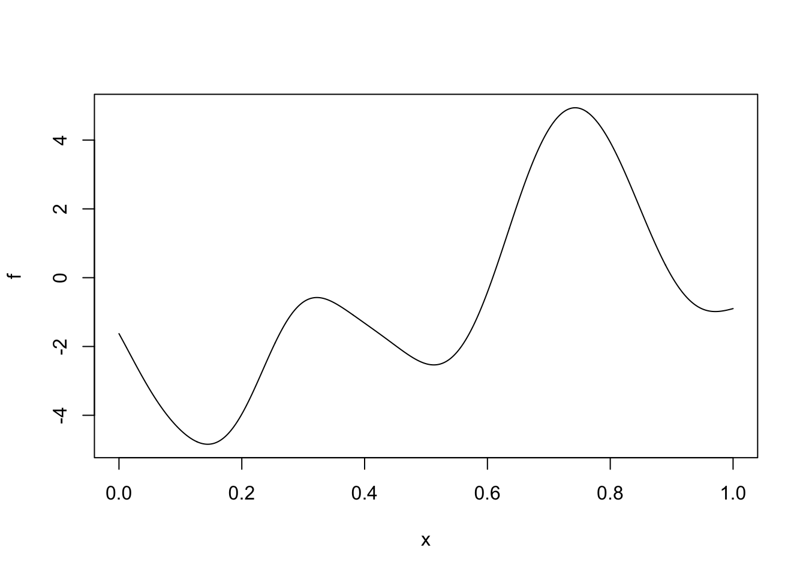
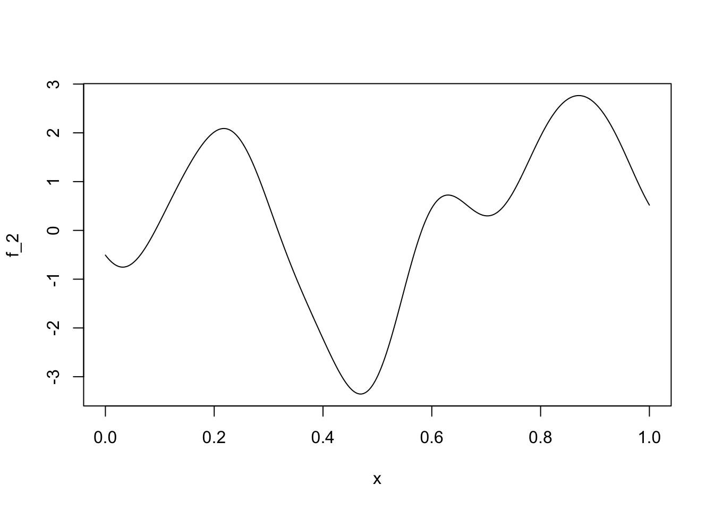
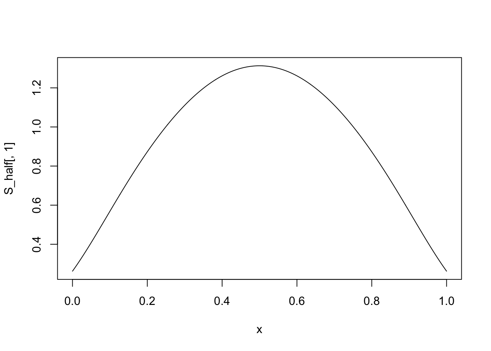
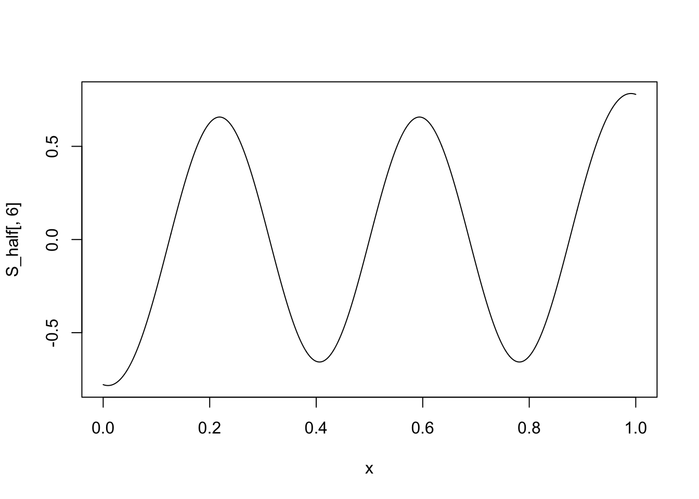
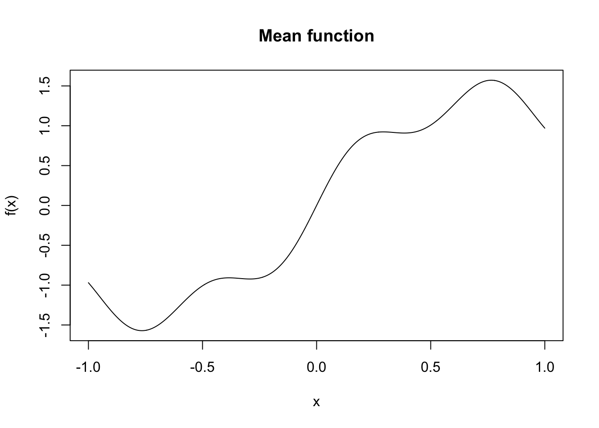
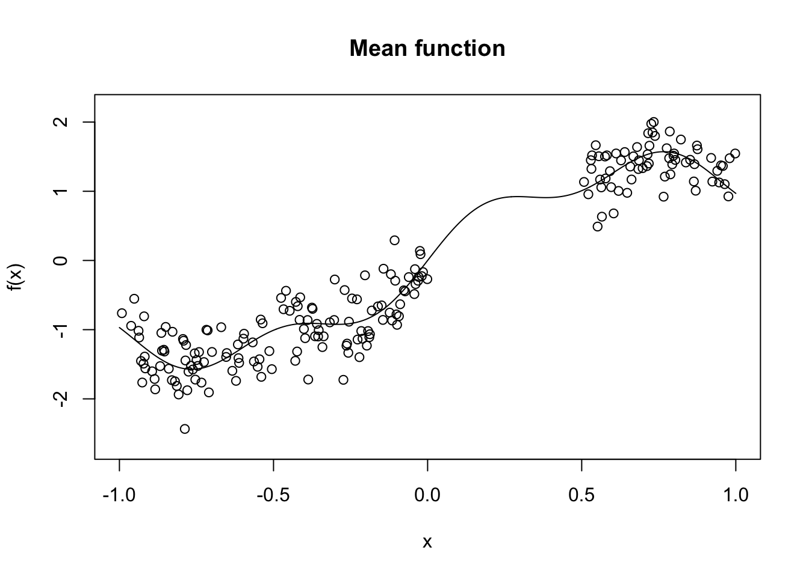
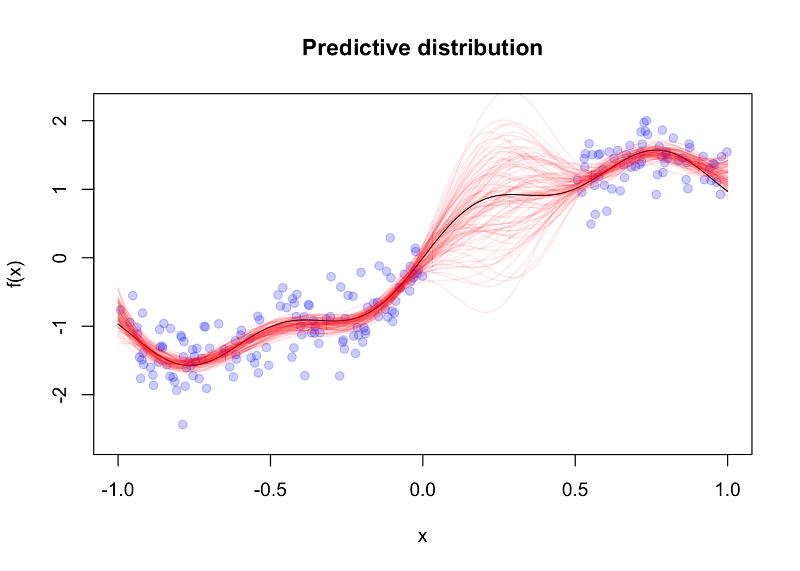
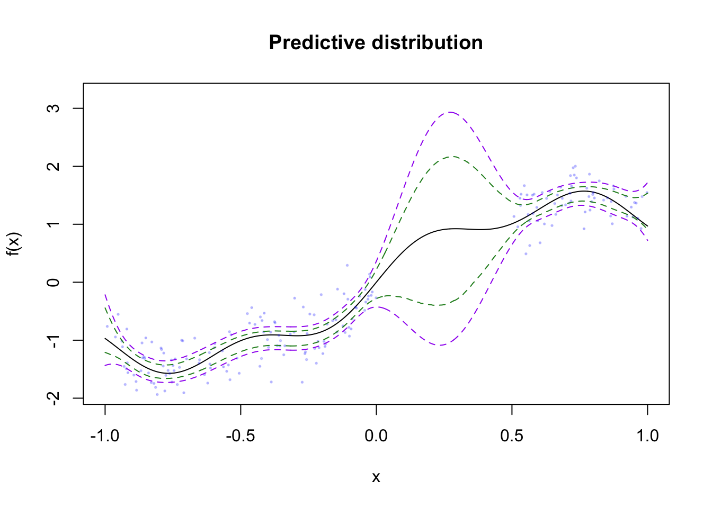
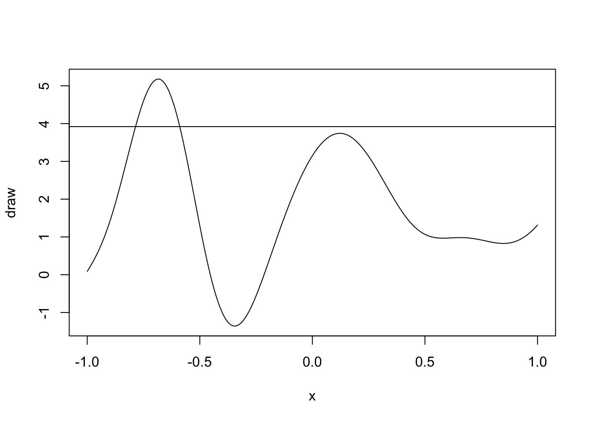

exp_quad <- function(x, sigma, ell) {
n <- length(x)
cov_mat <- matrix(NA_real_, n, n)
for (i in 1:n)
for (j in 1:n) {
dist_ij <- abs(x[i] - x[j])
cov_mat[i,j] <- sigma^2 * exp(-dist_ij^2 / (2 * ell^2))
}
return(cov_mat)
}Lab 1
Good Code
Good code
In rough order of importance (for us as statisticians/data scientists):
- Correct
- Easy to understand
- Easy to reuse
- Efficiency: speed, memory, I/O
You’ll work through these concepts using the example of simulating from a Gaussian process.
Gaussian process introduction
The univariate Gaussian process (GP) is a collection of random variables \(f(x) \in \R\), which is defined over some domain \(\mathcal{X}\), typically some subset of \(\R^d\), where \(d \leq 3\). A GP has the property that for any finite collection of points \(x_i \in \mathcal{X}, i = 1, \dots, n\), \(f(x_i), i = 1, \dots, n\) are jointly multivariate normal with mean \(\mu(x_i)\) and pairwise covariance \(k_{\theta}(x_i, x_j)\).
We’ll write the process like: \[ f(x) \sim \text{GP}(\mu, k_\theta) \] and a draw over the finite set \(x_i, i = 1,\dots,n\) as: \[ f \sim \text{MultiNormal}(\mu, \Sigma) \] where \[ \mu_i = \mu(x_i),\quad \Sigma_{ij} = k_{\theta}(x_i, x_j) \]
For our simulations, \(\mu(x_i) = 0\) for all \(x_i\), but we’ll look at how different covariance functions lead to differently behaved Gaussian processes.
GPs show up all over the place in statistics. Much of time series literature focuses on studying ARMAs, which are GPs on the domain \(\R^+\). Spatial statistics typically deal with GPs on subsets of \(\R^2\). Spatio-temporal statistics use GPs on \(\R^3\), where time is an extra dimension.
They also show up in theoretical statistics and mathematical finance. Brownian motion is a GP, and asymptotic theory for semiparametric statistics often deals with GPs.
Using GPs for prediction
When paired with normally distributed observations, we can use the properties of the multivariate normal distribution to predict the observations at points in \(\mathcal{X}\) that have not been observed.
First we need to learn a bit about the multivariate normal distribution.
Definition 1 (Conditional multivariate normal distribution) Let \(W_1\) be an \(n_1\)-dimensional random vector and \(W_2\) be a \(n_2\) dimensional random vector. These vectors have elements \(W_{ji}, i = 1, \dots, n_j\). Furthermore, let the combined vector \((W_1^T, W_2^T)^T\) be distributed as multivariate normal with the following block structure:
\[ \begin{pmatrix} W_1 \\ W_2 \end{pmatrix} \sim \text{MultiNormal}\lp \begin{pmatrix} \mu(W_1) \\ \mu(W_2) \end{pmatrix}, \begin{pmatrix} \Sigma(W_1, W_1) & \Sigma(W_1, W_2) \\ \Sigma(W_1, W_2)^T & \Sigma(W_2, W_2) \end{pmatrix}, \rp \] where \(\mu(W_j)\) is a column vector with \(i^\mathrm{th}\) element \(\Exp{W_ji}\) for \(i = 1, \dots, n_j\) \(\Sigma(W_j, W_k) = \Cov{W_j}{W_k}\) with \((i,m)^\mathrm{th}\) element \[ \Sigma(W_j, W_k)_{i,m} = \Cov{W_{ji}}{W_{km}} \]
Then the conditional distribution of \(W_1 \mid W_2 = w\) is multivariate normal with mean and covariance parameters \[ \mu(W_1) + \Sigma(W_1, W_2)\Sigma^{-1}(W_2, W_2)(w - \mu(W-2)), \Sigma(W_1, W_1) - \Sigma(W_1, W_2)\Sigma^{-1}(W_2, W_2)\Sigma^T(W_1, W_2). \]
Suppose we have observations \((y_i, x_i), i = 1, \dots, n\) where we assume the following probabilistic model: \[ \begin{aligned} Y_i \mid X_i = x & \sim \text{Normal}(f(x), \sigma^2) \\ f & \sim \text{GP}(0, k_\theta) \end{aligned} \] and we wish to predict \(f\) at new locations \(\tilde{x}_j, j = 1, \dots J\). We know that for finitely many \(x\) we have \(f(x) \sim \text{MultiNormal}(0, K(X,X))\) where \(\Sigma_{ij} = k_\theta(x_i, x_j)\) This means that \[ \begin{pmatrix} Y \\ f(\tilde{x}) \end{pmatrix} \sim \text{MultiNormal}\lp \begin{pmatrix} 0 \\ 0 \end{pmatrix}, \begin{pmatrix} K(X,X) + \sigma^2 I_n & K(X,\tilde{X}) \\ K(X,\tilde{X})^T & K(\tilde{X}, \tilde{X}) \end{pmatrix}, \rp \]
The conditional distribution for \(f(\tilde{x}) \mid Y = y\) is then multivariate normal with parameters \[ K(X,\tilde{X})(K(X,X) + \sigma^2 I_n)^{-1}y, K(\tilde{X}, \tilde{X}) - K(X,\tilde{X})(K(X,X) + \sigma^2 I_n)^{-1}K^T(X,\tilde{X}) \]
Covariance functions
In order to use GPs for modeling, we need to choose a covariance function \(k_{\theta}(x_i, x_j)\). In this lab, we’ll focus on stationary, isotropic covariance functions only, which means that the form of the covariance function does not change with locations of the inputs, and the covariance function depends only on the Euclidean distance between the two points: \[ r(x_i, x_j) = \norm{x_i - x_j}_2 \] Popular choices are the exponentiated quadratic (also called a squared exponential, though the order is wrong here, as you’ll see). T: \[ k_{\sigma, \ell}(x_i, x_j) = \sigma^2 \exp(-r(x_i, x_j)^2 / (2\ell^2)). \]
There is also the exponential covariance function:
\[ k_{\sigma, \ell}(x_i, x_j) = \sigma^2 \exp(-r(x_i, x_j) / \ell). \] Let’s write the exponentiated quadratic covariance function for \(\mathcal{X} \subseteq \R\):
Now let’s apply it to a set of \(x_i\) in the interval \([0,1]\):
n <- 1000
x <- seq(0,1,length.out = n)
Sigma <- exp_quad(x, 2, 0.1) + diag(n) * 1e-12Now use what we learned about the Cholesky decomposition: \[ \Sigma = L L^T \] to generate a draw from the GP:
\[ z \sim \text{Normal}(0, I_{n}) \implies Lz \sim \text{MultiNormal}(0, L L^T) \]
L <- t(chol(Sigma))Now we plot the output as a function of \(x\):
z <- rnorm(n)
f <- L %*% z
plot(x, f, type = "l")
There are other ways to generate a draw from a GP:
S_eigen <- eigen(Sigma)
S_half <- S_eigen$vectors %*% diag(sqrt(S_eigen$values))
z <- rnorm(n)
f <- L %*% z
f_2 <- S_half %*% zHere’s the resulting plot:
plot(x, f_2, type = "l")
Let’s look at some of the scaled eigenvectors:
plot(x, S_half[,1], type = "l")
plot(x, S_half[,6] , type = "l")
Your Turn:
Now you’ll rewrite the exp_quad function to be more efficient. In order to guide your development, think about the following questions: - What can be precomputed and reused? - Are there any properties of the covariance matrix that can reduce the number of operations you do? - Can you think of any combinations of \(x_i\) and \(x_j\) that would make the computation of distance unnecessary?
exp_quad_eff <- function(x, sigma, ell) {
}Writing code to be reused
Now let’s say we want to plot a draw from a GP with an exponential covariance function. We just wrote an efficient implementation of the covariance function for the exponentiated quadratic, and it would be a shame to have to write a new function while changing only one line.
Instead, let’s write a function called apply_cov_fun which takes a generic covariance function and applies it to a vector of positions (i.e. the \(x_i\)s) and spits out a covariance matrix.
A generic covariance function needs to do one thing: it takes a distance (because we’re in isotropic covariance function land), pushes the distance through some function along with some parameters and returns the covariance of the GP at those two positions.
I’ll write the exponentiated quadratic function to get us started:
elt_exp_quad <- function(d_ij, sigma, ell) {
sigma^2 * exp(-d_ij^2 / (2 * ell^2))
}Now write the apply_cov_fun function
apply_cov_fun <- function(x, cov_fun, sigma, ell) {
n <- length(x)
cov_mat <- matrix(NA_real_, n, n)
## Apply cov_fun to each ij distance pair
return(cov_mat)
}We then can call the new covariance function like so:
Sigma_alt <- apply_cov_fun(x, elt_exp_quad, 2, 0.1)Your turn
Write the element-wise exponential covariance function, use it using the apply_cov_fun function and plot some draws from the GP.
elt_exp <- function(d_ij, sigma, ell) {
}Sigma_exp <- apply_cov_fun(x, elt_exp, 2, 0.1) + diag(n) * 1e-12Learning about properties of the GP through simulation
While the joint distribution of GPs are tractable, the covariance functions make analytical investigation hard without specialized tools. We can use Monte Carlo simulations to get a better sense of the properties of GPs.
General structure of Monte Carlo simulations
- Simulate many examples
- Calculate something on each example
- Explore the many calculated things
Example: Marginal vs. functional quantiles
Let’s examine how the marginal 97.5% quantile compares to the 97.5% quantile of the suprema.
First we’ll simulate many draws of the GP using matrix multiplication:
z_draws <- matrix(rnorm(1e4 * n),n,1e4)
fs <- L %*% z_drawsNow we can calculate the 97.5% quantile at each \(x_i\) location:
q975 <- apply(fs, 1, quantile, 0.975)Another quantity we might be interested in is the quantile for the following quantity:
\[ y = \sup_{x \in [0,1]} f(x) \] We can’t calculate this exactly because we would need to compute \(f(x)\) at all \(x\) in \([0,1]\). Instead we can use our simulations to get a distribution over the supremum.
Your turn
Use the apply function to get a distribution over the supremum using the draws you already have saved in fs.
Make sure you specify the MARGIN=2 for the apply function
Make a histogram. What do you notice about the 97.5% quantile of the supremum compared to the marginal quantiles?
Compute the 95% Monte Carlo standard errors of your 97.5% quantile for the supremum.
Confidence bands
Let’s use the previous ideas to generate a confidence band for predictions from a Gaussian process regression model.
Suppose we have \(X_i \in [-1,1], i = 1, \dots, 500\) and observe \[ Y_i \mid X_i = x \sim \text{Normal}(x + 0.75 \sin(2 x) + 0.25 \sin(10 x), 0.1) \] The mean function for our data looks like:
x <- seq(-1,1,length.out=1000)
f_x <- x + 0.75 * sin(3*x) + 0.25 * sin(10 * x)
plot(x, f_x,
type = 'l',
ylab = "f(x)",
xlab = "x",
main = "Mean function")
To make things interesting, we’ll make it so that we observe only \(x_i\) on the set \([-1,0) \cup (0.5,1]\).
set.seed(097809833)
n_obs <- 200
i_obs <- sample(which(x < 0 | x > 0.5), n_obs, replace = FALSE)
x_obs <- x[i_obs]
y_obs <- f_x[i_obs] + rnorm(n_obs) * sqrt(0.1)
x_miss <- x[-i_obs]
n_miss <- length(x_miss)When we overlay our observations, we’ll see the gap in our coverage:
plot(x, f_x,
type = 'l',
ylab = "f(x)",
xlab = "x",
main = "Mean function",
ylim = range(y_obs)*1.1)
points(x_obs, y_obs)
We can use our results from above for the predictive distribution for \(f(x)\) when we assume an exponentiated quadratic covariance function with fixed length scale and variance. We’ll assume that we know the noise variance.
exp_quad_eff <- function(x, sigma, ell) {
n <- length(x)
cov_mat <- matrix(NA_real_, n, n)
sigma_sq <- sigma^2
two_ell_sq <- 2 * ell^2
for (i in 1:(n-1)) {
cov_mat[i,i] <- sigma_sq
for (j in (i+1):n) {
dist_ij <- abs(x[i] - x[j])
cov_mat[i,j] <- sigma_sq * exp(-dist_ij^2 / two_ell_sq)
cov_mat[j,i] <- cov_mat[i,j]
}
}
cov_mat[n,n] <- sigma_sq
return(cov_mat)
}
exp_quad_xy <- function(x, y, sigma, ell) {
n_x <- length(x)
n_y <- length(y)
cov_mat <- matrix(NA_real_, n_x, n_y)
sigma_sq <- sigma^2
two_ell_sq <- 2 * ell^2
for (i in 1:n_x) {
for (j in 1:n_y) {
dist_ij <- abs(x[i] - y[j])
cov_mat[i,j] <- sigma_sq * exp(-dist_ij^2 / two_ell_sq)
}
}
return(cov_mat)
}
len_scale <- 0.25
K_xx <- exp_quad_eff(x_obs, 2, len_scale) + diag(n_obs) * 0.1
K_xy <- exp_quad_xy(x_miss, x_obs, 2, len_scale)
K_ww <- exp_quad_eff(x_miss, 2, len_scale) + diag(n_miss) * 1e-6
L_Kxx <- t(chol(K_xx))
l_y <- forwardsolve(L_Kxx, y_obs)
alpha <- backsolve(t(L_Kxx), l_y)
pred_mean <- K_xy %*% alpha
v <- forwardsolve(L_Kxx, t(K_xy))
pred_var <- K_ww - t(v) %*% v
L_pred_var <- t(chol(pred_var))
pred_draws_cent <- L_pred_var %*% matrix(rnorm(n_miss * 1e4),n_miss, 1e4)
pred_draws <- sweep(pred_draws_cent, MARGIN = 1, STATS = pred_mean, FUN = "+")
plot(x, f_x,
type = 'l',
ylab = "f(x)",
xlab = "x",
main = "Predictive distribution",
ylim = range(y_obs)*1.1)
points(x_obs, y_obs, pch = 19, col = scales::alpha("blue", alpha = 0.2))
for (i in 1:100){
lines(x_miss, pred_draws[,i], col = scales::alpha("red",alpha = 0.1))
}
We want a confidence band around the function, rather than pointwise confidence intervals.
marg_sds <- sqrt(diag(pred_var))
scaled_draws <- sweep(pred_draws_cent, 1, marg_sds, FUN = "/")
sups <- apply(scaled_draws,2,max)
q_p5 <- quantile(sups, 0.975)
upper_f <- pred_mean + marg_sds * q_p5
lower_f <- pred_mean - marg_sds * q_p5
pointwise_upper <- apply(pred_draws, 1, quantile, 0.975)
pointwise_lower <- apply(pred_draws, 1, quantile, 0.025)
plot(x, f_x,
type = 'l',
ylab = "f(x)",
xlab = "x",
main = "Predictive distribution",
ylim = range(c(upper_f, lower_f))*1.1)
points(x_obs, y_obs, pch = 19, col = scales::alpha("blue", alpha = 0.2), cex = 0.25)
lines(x_miss, upper_f, lty = 2, col = scales::alpha("purple"))
lines(x_miss, lower_f, lty = 2, col = scales::alpha("purple"))
lines(x_miss, pointwise_upper, lty = 2, col = scales::alpha("forestgreen"))
lines(x_miss, pointwise_lower, lty = 2, col = scales::alpha("forestgreen"))
The purple bands are the “functional” confidence intervals, while the green bands are the pointwise bands. These are much narrower, which arises from the fact that a
Level crossings
Another property of GPs that we can quantify are the number of times a draw of the GP crosses a threshold. Let’s pick the level \(2z_{0.975}\), or
lvl <- 2 * qnorm(0.975)set.seed(28734957)
draw <- L %*% rnorm(n)
plot(x, draw, type = "l")
abline(h = lvl)
This GP crosses the 97.5% quantile twice before falling below and never returning.
Your turn
Write a function called lvl_crossing that computes the number of times a GP, f crosses a level lvl.
This function, stubbed out below, should loop over the draw of the GP, f, once, and keep track of whether the GP is below lvl and rises above or vice versa. It should keep a running tally of the number of times this event happens, and return this count.
lvl_crossing <- function(f, lvl) {
}Now apply your function to the collection of draws of the GP from above,
fs.Make a histogram of the results.
Now simulate \(10{,}000\) draws from a GP with an exponential covariance using your precomputed covariance matrix
Sigma_expto createL_expsoSigma_exp = L_exp %*% t(L_exp).
z_draws <- matrix(rnorm(1e4 * n),n,1e4)
fs_exp <- L_exp %*% z_draws- Apply your
lvl_crossingfunction to thefs_expdraws, again usingMARGIN=2and make a histogram of the results
What changed? What can you say about how the number of crossings depends on the covariance function? Do you have any hypotheses about what properties of the GP can lead to more crossings?
Takeaways
- Use functions to remove duplication and wrap-up important pieces of code
- You can pass functions into other functions in R
- Simulation is a powerful way to quantify probabilistic properties of complicated random processes